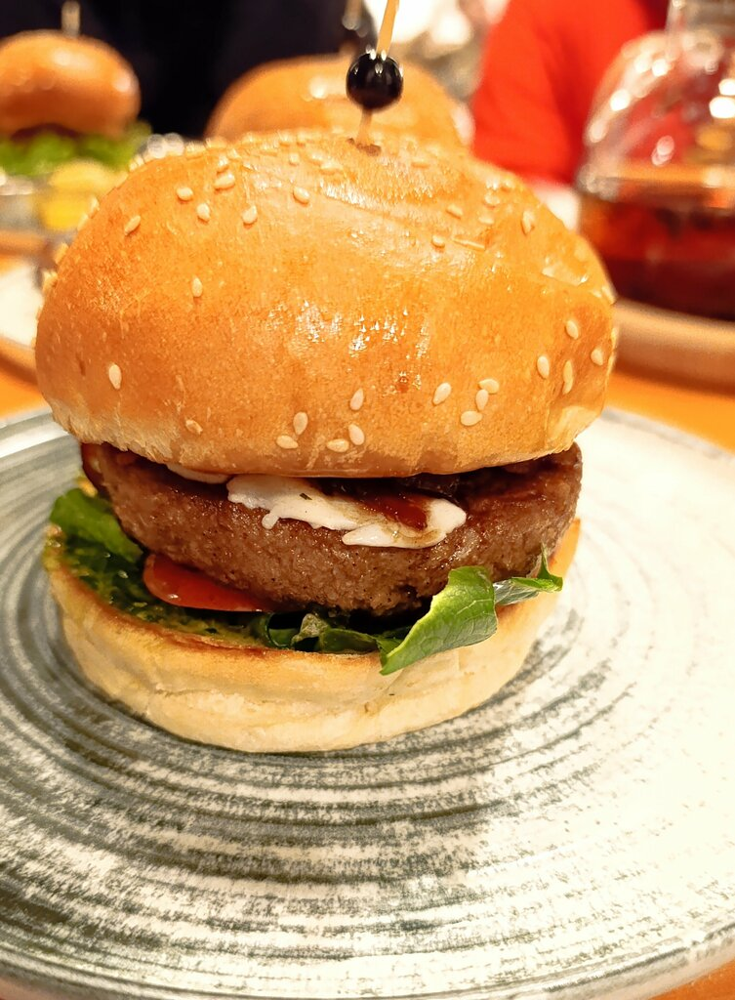
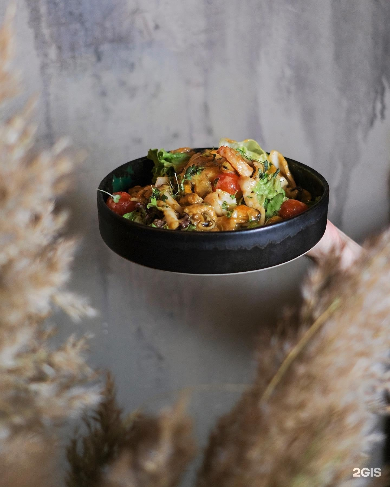

Кухня The Угол
Меню.
Бургеры, мясо из угольной печи и всё, что хочется взять к столу.
Таких блюд не найдено. Попробуйте другое название.

Бургеры
- Техас350 г685 ₽
- Бургер Инферно320 г670 ₽
- Бургер Стоун400 г790 ₽
- Бургер Рокстар290 г510 ₽
- Бургер Железный человек350 г570 ₽
- Бургер Вокер320 г610 ₽
- Бургер Капитан Америка340 г680 ₽
- Бургер Бруклин400 г900 ₽
- Бургер Четыре сыра340 г670 ₽
- Бургер Локи350 г670 ₽

Мясо и птица
- Свиные рёбра100 г390 ₽
- Медальоны100 г980 ₽
- Стейк выдержанный 21 день100 г800 ₽
- Свиной ошеек100 г400 ₽
- Антрекот из угольной печи200 г1100 ₽
- Куриное филе в сливочно-сырном соусе360 г600 ₽

Супы
- Суп лапша500 г370 ₽
- Рамен350 г550 ₽
- Борщ300 г460 ₽
- Лакса450 г600 ₽

Салаты
- Салат с телятиной гриль290 г720 ₽
- Салат с баклажанами250 г420 ₽
- Салат Цезарь300 г470 ₽
- Салат с морепродуктами330 г770 ₽
- Салат Греческий220 г450 ₽
- Салат с грушей150 г470 ₽
- Салат Овощной180 г295 ₽
Закуски
- Грибы Фри150 г380 ₽
- Кольца кальмаров150 г390 ₽
- Куриные стрипсы150 г440 ₽
- Куриные крылья Свит Чили/Терияки/Каролина200 г490 ₽
- Хрустящая креветка140 г650 ₽
- Картофель фри180 г280 ₽
- Батат фри170 г420 ₽
- Сырные палочки100 г450 ₽
- Бир пати400 г770 ₽
Паста
- Паста Карбонара260 г485 ₽
- Паста с соусом Песто250 г510 ₽
- Паста с креветкой250 г550 ₽